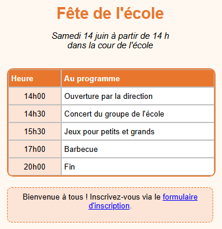

Parcours d'apprentissage › Leçon 7
Blocs de texte

Tableau ou bloc de texte ?
- Un tableau sert pour des données en lignes et en colonnes.
- Un bloc de texte est une zone de texte libre que vous pouvez placer n'importe où sur la page : un titre, une courte explication, une remarque ou un pied de page.
À vous de jouer
- Créez un tableau de 2 colonnes et 6 lignes avec le programme (heure et activité).
- Le tableau doit descendre un peu sur la page pour laisser de la place au titre : maintenez Ctrl enfoncée et faites
glisser le tableau vers le bas, ou augmentez Move Y dans l'onglet
 Tableau (T).
Tableau (T). - Cliquez sur la page au-dessus du tableau puis, dans l'onglet
 Bloc de texte (B), sur
Bloc de texte (B), sur
 TBA. Un bloc de texte apparaît.
TBA. Un bloc de texte apparaît. - Double-cliquez sur le bloc et tapez Fête de l'école. Cliquez à côté pour arrêter la saisie.
- Mettez le titre en forme : Gras, Centrer, Taille de police 20 et une Couleur du texte orange. Faites glisser le coin inférieur droit pour donner au bloc la largeur du tableau.
- Créez de la même façon un deuxième bloc avec la date et le lieu, et un troisième bloc sous le tableau.
- Encadrez le bloc du bas : désactivez Transparent, choisissez une Couleur du bloc claire et choisissez tirets comme Style de bordure.
Un lien dans un bloc de texte
Dans un bloc de texte, un mot ou un morceau de texte peut être un lien. Double-cliquez sur le bloc, sélectionnez le morceau de
texte (dans l'exemple formulaire d'inscription) et, dans l'onglet Bloc de texte, cliquez sur
 HL+. Tapez l'adresse. Vous pouvez aussi mettre un seul mot en gras ou
en italique de cette façon : sélectionnez-le et cliquez sur Gras ou Italique.
HL+. Tapez l'adresse. Vous pouvez aussi mettre un seul mot en gras ou
en italique de cette façon : sélectionnez-le et cliquez sur Gras ou Italique.
Exercice
Placez à droite du tableau un nouveau bloc de texte avec Entrée gratuite ! en rouge et en gras, avec un cadre en pointillés. Déplacez-le ensuite avec Move X et Move Y jusqu'à ce qu'il soit bien placé à côté du tableau.
Solution
Cliquez à droite du tableau puis sur TBA. Double-cliquez, tapez le texte et cliquez à côté. Cliquez sur Gras, choisissez une Couleur du texte rouge, désactivez Transparent et choisissez pointillés comme Style de bordure. Ajustez Move X et Move Y jusqu'à ce que le bloc soit au bon endroit. Vérifiez dans le navigateur de test qu'il s'y présente de la même façon.
Vous travaillez sous Linux ? Ouvrez alors l'exemple vous-même avec Ouvrir le concepteur de tableau : dossier
lessen/fr, fichier les07-uitnodiging.htd.